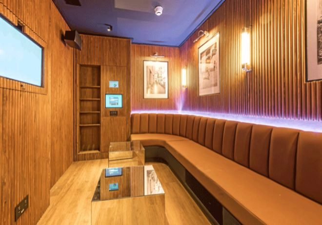

Paris es una Ciudad esplendorosa, vibrante, ciudad de la moda y los grandes gourmets,
ciudad de amplias avenidas y plazas de esplendor, monumentos y edificios históricos, los mejores museos,
París tiene todo lo que buscáis sobre todo si buscas un viaje con tu pareja.
Actividades
Caminar por la calle
Una de las mejores actividades que puedes hacer en un país como Japón es llegar a los sitios
caminando, de esta manera podrás observar lo bonito que es el país y lo diferente que es y
descubrir cosas mientras llegas a tu destino.
Ir a un karaoke
En Japón los karaokes son muy famosos puesto que son diferentes a la mayoría de los países.En Japón cuando
vas a un karaoke alquilas una
habitación privada para estar con tus amigos y en desde la habitación puedes pedir bebidas y te las llevan.

Visitar el monte Fuji
El mejor momento para subir al monte Fuji es en julio y agosto.
Aquí te dejamos un vídeo que podría aclararte algunas ideas sobre tu viaje.